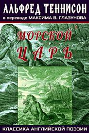
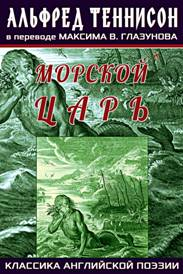
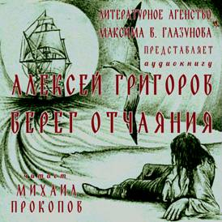
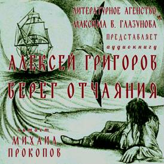
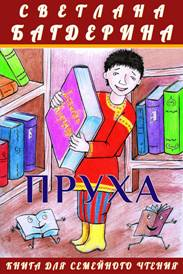
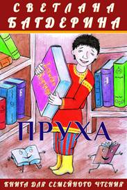

НовОСТИ:Þ 19/08/23 Сборник Максима В. Глазунова «Рыцарь туманного Авалона» теперь в АУДИО! Анонс аудиокниги Þ 12/05/23 В серии «Книга для семейного чтения» Виктора Кузьмина «Сэр Ланселот Озерный и Черный Рыцарь». Анонс книги Þ 7/04/23 Вышла бесплатная аудиокнига Максима В. Глазунова «Неблагодарный». Анонс аудиокниги Þ 26/01/23 Вышла бесплатная аудиокнига Алексея Григорова «Взявшие меч». Анонс аудиокниги Þ 07/11/22 Вышла аудиокнига Светланы Багдериной «Пруха». Анонс аудиокниги Þ 08/12/22 Вышла бесплатная аудиокнига Светланы Багдериной «Непруха». Анонс аудиокниги Þ 11/10/22 Вышла аудиокнига Виктора Кузьмина «Князь Псковский Довмонт благоверный». Анонс аудиокниги Þ 09/09/22 Вышла аудиокнига «Необычайные истории, рассказанные Фрэнком Ричардом Стоктоном и Марком Твеном». Анонс аудиокниги Þ 08/09/22 Вышла аудиокнига Виктора Кузьмина «Банда чёрных котов». Анонс аудиокниги Þ 09/05/22 Аудиокнига по повести Максима В. Глазунова «„Як“ по имени Пчёлка» доступна для бесплатной загрузки. Анонс книги Þ 01/12/21 В серии «Книга для семейного чтения» вышла книга Светланы Багдериной «Пруха». Анонс книги Þ 11/11/21 В серии «Книга для семейного чтения» вышла книга Светланы Багдериной «Непруха». Анонс книги Þ 08/11/21 В серии «Классика» вышла книга «Необычайные истории, рассказанные Фрэнком Ричардом Стоктоном и Марком Твеном». Анонс книги Þ 26/05/21 Аудиокнига-путеводитель Светланы Багдериной Севастополь: инструкция по применению, О необходимом» доступна для бесплатной загрузки. Þ 22/04/21 Аудиокнига по рассказу Светланы Багдериной «От беты до альфы» доступна для бесплатной загрузки. Þ 12/04/21 Анонс книги Виктора Кузьмина «Князь Псковский Довмонт благоверный» Þ 12/04/21 Вышла книга Виктора Кузьмина «Князь Псковский Довмонт благоверный» Þ 29/03/21 Вышла аудиокнига по повести Максима В. Глазунова «Рыцарь туманного Авалона» Þ 04/02/21 Рецензия на сборник «Акира Куросава» Þ 30/12/20 Вышел авторский сборник Светланы Багдериной «6 жизней Анны Карениной» (3-ий сборник серии «Повести и рассказы») Þ 25/11/20 Вышел сборник Максима В. Глазунова «„Як“ по имени Пчёлка» (2-ой авторский сборник серии «Повести и рассказы») Þ 02/07/20 Аудиокнига по рассказу Светланы Багдериной «Игра на поражение» доступна для бесплатной загрузки Þ 05/06/20 Акция: ударим по коронавирусу ударным отдыхом в Крыму! Скачать путеводитель «Севастополь: инструкция по применению» БЕСПЛАТНО Þ 03/06/20 В серии «С фотоаппаратом по миру» вышла книга Светланы Багдериной «Севастополь: инструкция по применению» Þ 28/05/20 Аудиокнига по рассказу Алексея Григорова «Берег отчаяния» доступна для БЕСПЛАТНОЙ загрузки Þ 07/05/20 Аудиокнига по рассказу Максима В. Глазунова «Луций, или Божественный аутсорсинг» доступна для БЕСПЛАТНОЙ загрузки Þ 10/04/20 Аудиокнига по рассказу Светланы Багдериной «Ключ от рая» доступна для БЕСПЛАТНОЙ загрузки Þ 04/03/20 Аудиокнига по рассказу Максима В. Глазунова «Идеальный ребенок» доступна для БЕСПЛАТНОЙ загрузки Þ 03/02/20 Аудиокнига по рассказу Максима В. Глазунова «Снеговик» доступна для БЕСПЛАТНОЙ загрузки Þ 28/01/20 Аудиокнига по рассказу Светланы Багдериной «Легенда о тёте Маше» доступна для БЕСПЛАТНОЙ загрузки Þ 23/01/20 Вышел авторский сборник Максима В. Глазунова «Рыцарь туманного Авалона» (серия «Повести и рассказы») Þ 05/01/20 Сборник переводов стихотворений Альфреда Теннисона «Морской царь» (серия «Классика мировой поэзии») Þ 27/12/19 Аудиокнига по рассказу Максима В. Глазунова «Муза и Севрюгин» доступна для БЕСПЛАТНОЙ загрузки Þ 20/12/19 Вышел роман Виктора Кузьмина «Банда чёрных котов» (серия «Книга для семейного чтения») |
 



|
Литературное агентство Максима В. Глазунова: новые книги |

 

 

|
Новинки Серии книг: |